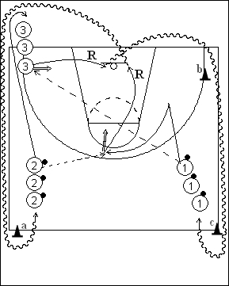

Catégorie : SHOOTS (Sh-008)
Déroulement
- Trois files de joueurs. Les joueurs des files se trouvant près de la ligne médiane ont un ballon.
- Le premier joueur de la file 1 fait la longue passe pour le premier joueur de la file 3. Il se démarque ensuite et reçoit le ballon du premier joueur de la file 2. Les premiers joueurs des files 1 et 3 shootent.
- 1 effectue son rebond, passe derrière la file 3 et le cône a et va dans la file 2. 2 va derrière la file 3. 3 fait son rebond, contourne les cônes b et c et va dans la file 1.
Coaching points
- Insister sur la vitesse du shoot directement après réception du ballon.
- On peut demander aux joueurs qui ne marquent pas leur shoot de reshooter à nouveau après rebond.